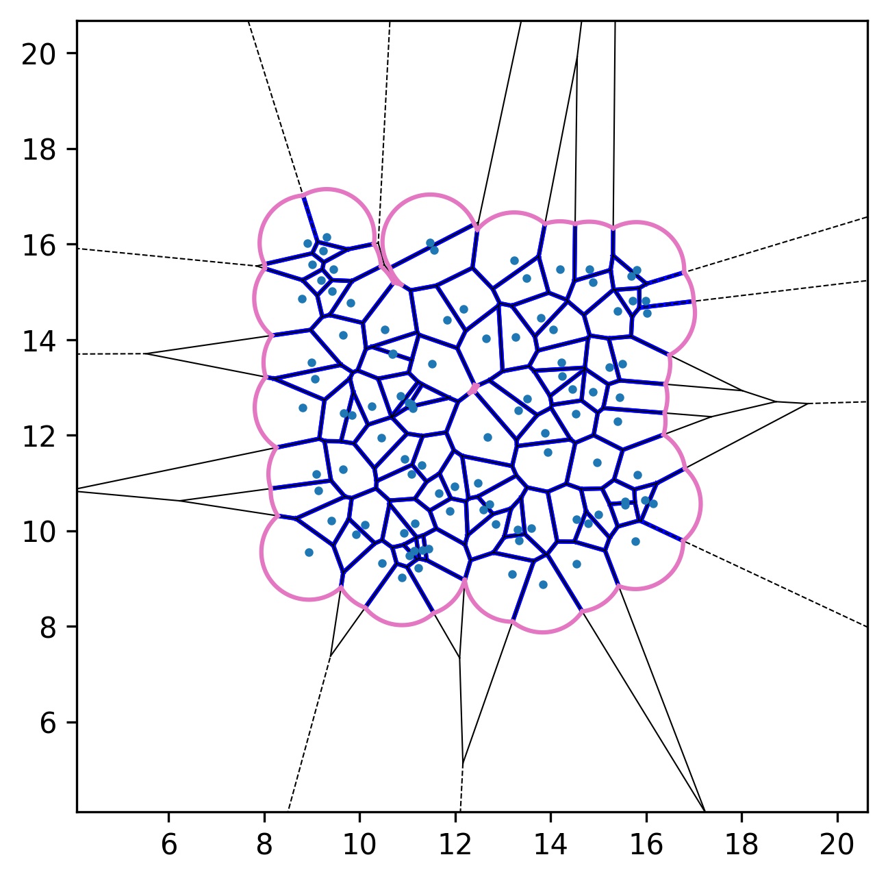
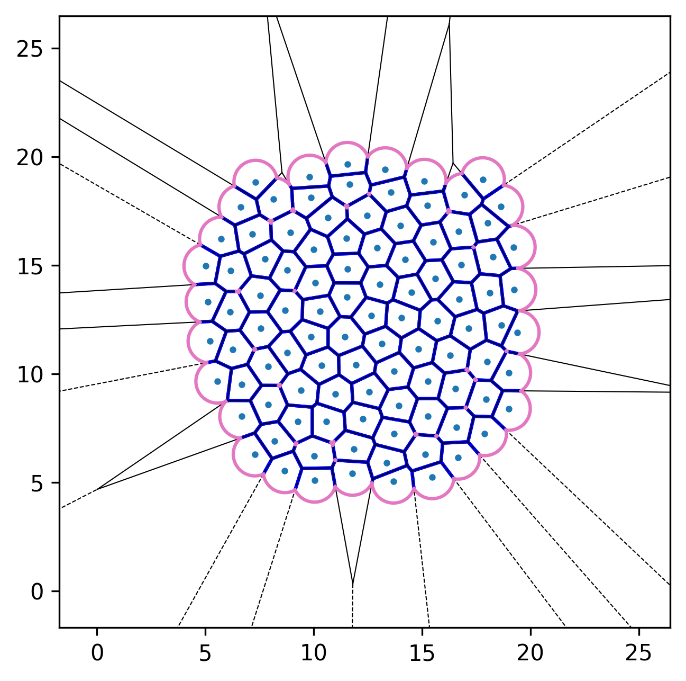
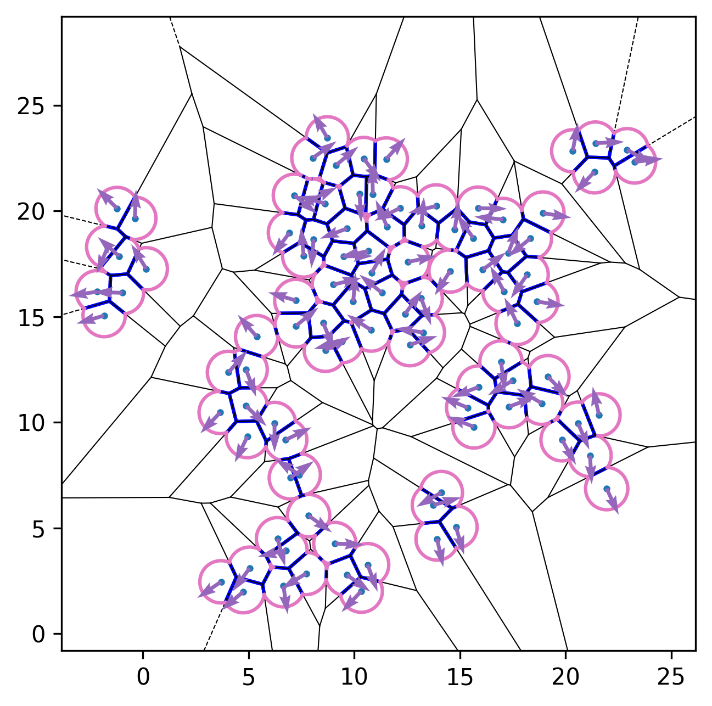

Simulation previews
Visual gallery




PyAFV is a simple Python toolkit for generating 2D finite-Voronoi tessellations, modeling cell mechanics, and exploring collective motility under active dynamics.
Compute areas, perimeters, vertices, edges, and conservative forces while visualizing emergent tissue structure in real time.
Generate and analyze finite Voronoi diagrams with rich geometric data: cell areas, perimeters, edges, vertices, and connectivity.
Activate motility and explore collective motion driven by self-propulsion, adhesion, and confinement.
Python ≥ 3.10 support, Cython-accelerated components, and clean APIs for integration into research workflows.
Access the full geometry and conservative forces via sim.build( ) and inspect the returned dictionary for areas, perimeters, edges, and vertices.